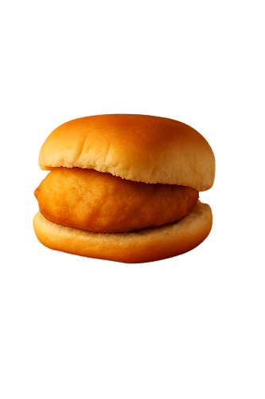
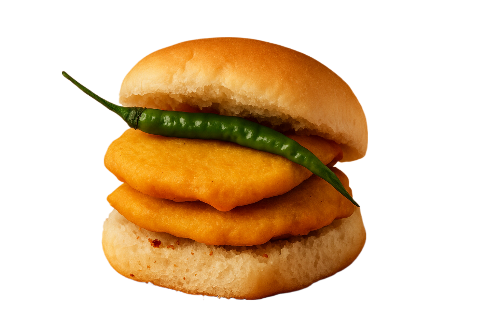
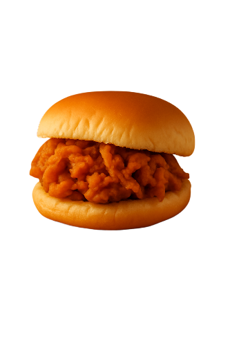
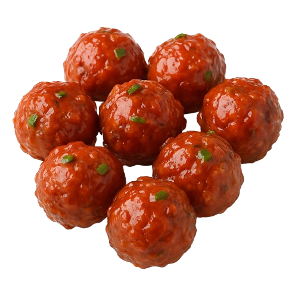

OUR CULINARY HISTORY

VADA PAV
Originated in Mumbai in the 1960s as an affordable snack for mill workers. Known as the "poor man's burger".
Read More →

POTATO BHAJI PAV
Inspired by Batata Poha, it became a staple breakfast in the 1970s across Maharashtra with spicy potatoes.
Read More →

ONION BHAJI PAV
A fusion of Gujarati pakoras and Mumbai's pav culture, this veggie delight was born in the 1980s.
Read More →
CHAI
From Ayurvedic roots to railway stalls, chai became the soul of India in the early 1900s.
Read More →

MANCHURIAN
Invented in 1975 by Nelson Wang in Mumbai, blending Indian and Chinese flavors in a sizzling fusion.
Read More →
NOODLE BHEL
Mumbai's crunchy take on bhel puri using fried noodles and desi masalas - street food innovation at its best!
Read More →